Tractor Energy Computation Model
This document provides an overview of the different components and subsystems of the tractor energy computation plant model. The plant model is a coupled hydro-mechanical model that you can use to simulate a tractor for tillage operations.
Contents
Model Overview
Open the Tractor Energy Computation model
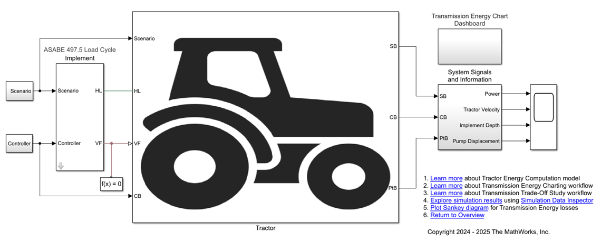The model represents a tractor attached to an implement. The tractor consists of the tractor body and powertrain attached to four tires: two front tires and two rear tires. The tractor body and powertrain constitutes of the engine, which is mated with the transmission and the body. The transmission is a hydrostatic continuously variable transmission (CVT) with one transmission pump and two hydraulic motors, one mounted on the front axle and one on the rear axle. The implement is connected to the rear axle and provides thrust to the rear left tire and rear right tire. The scenario subsystem models the initial conditions for tire-soil and implement-soil interaction. The Driver Controls subsystem provides the engine speed, transmission pump displacement, and implement depth commands for the Tractor subsystem. You can visualize the energy flow in the transmission by looking inside the Transmission Energy Chart Dashboard subsystem. The System Signals subsystem combines key measured signals. The Energy Calculations subsystem computes the energy consumed by the various components of the transmission.
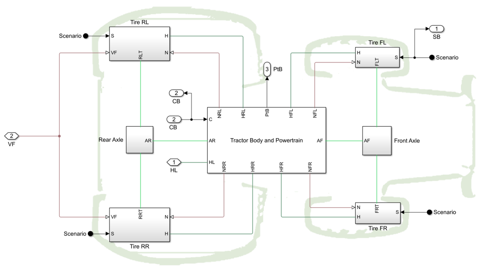Tractor Body and Powertrain Subsystem
The tractor body and powertrain is comprised of the engine, which is mated with the hydrostatic CVT and the vehicle body. The Vehicle Body block models the tractor body. The vehicle body is connected to the tires and transmits normal loads to and from the tires.
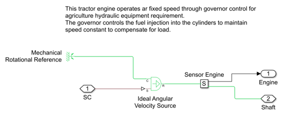An Ideal Angular Velocity Source block models the tractor engine. This tractor engine operates at fixed speed through governor control for implement load requirement. The driver control system provides the speed command to the engine. A rotational motion sensor and torque sensor measure the engine speed and torque respectively.
Open Hydrostatic CVT Subsystem
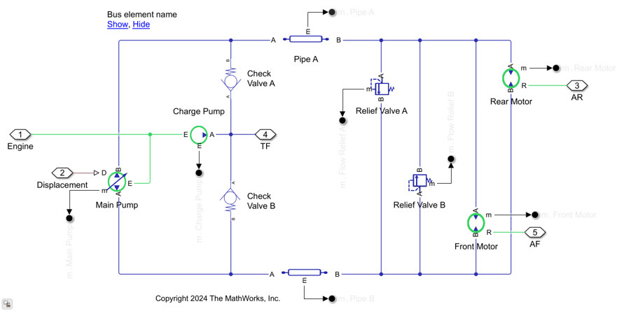A hydrostatic CVT consists of one transmission pump that drives transmission fluid SAE 5W-30 to two hydraulic fixed-displacement motors. A variable-displacement pump models the transmission pump. One motor is mounted on the front axle and the other on the rear axle. The transmission pump receives displacement command from the driver control system. Pipes model the hydraulic resistance of the transmission circuit. A fixed-displacement charge pump, that is run by an engine, replenishes lost fluid due to the volumetric inefficiency of the transmission pump and motors and also provides power for auxilliary functions. Check valves prevent backflow to the charge pump. Pressure relief valves release excess pressure from the system. Flow rate sensors measure the volumetric flow and pressure sensors measure pressure across various transmission components. Rotational motion sensors and torque sensors measure the motor speed and torque, respectively.
Tire Model
A custom Simscape component block models the front left tire, front right tire, rear left tire, and rear right tire.
Open Front Left Tire Subsystem
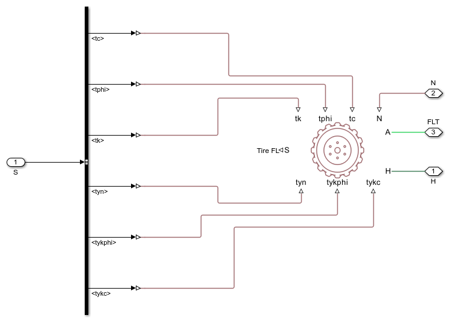The Tire-Soil Interaction block is a custom Simscape component that models the longitudinal tire-soil interaction and characterized based on Bekker equation. The interaction physics include tire tractive effort with slip, compaction, and flexing effects. You can optionally include the effects of tire inertia. The custom block has a mechanical rotational conserving port connected to the differential mounted on front axle. The custom block has a mechanical translational conserving port for the wheel hub through which the tire thrust is applied to the vehicle. Port N is a physical signal input port that applies the normal force acting on the tire. The force is considered positive if it acts downwards. Port S is a physical signal output port that reports the tire slip.
Physical signal ports tc , tphi , and tk are the cohesion of the terrain, the angle of internal shearing resistance of the terrain, and the shear deformation parameter of the terrain, respectively. Physical signal ports tykc , tykphi , and tyn are the soil sinkage cohesion moduli, the soil sinkage friction moduli, and the soil sinkage exponent, respectively.
Implement Subsystem
The Implement subsystem models an implement attached to a tractor using a custom Simscape component.
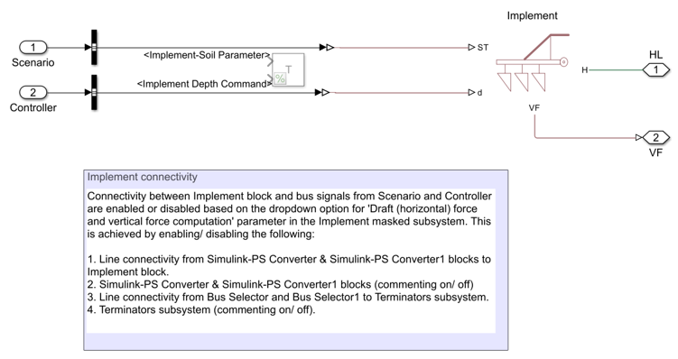The implement draft force is the horizontal component of the force required to pull the implement. Draft force is specified by an empirical relation as a function of field velocity. You can also provide the implement draft force as a custom function. The draft force is negative when field velocity is positive. The Implement block has a mechanical translational conserving port associated with the horizontal motion of the implement. Connect the resulting traction motion developed by tractor body to this port.
Ports ST , d are the physical signal input ports of the Implement block that represent soil texture and depth of tillage, respectively. Port VF is physical signal output port for vertical force exerted by implement on the tractor. The implement vertical force is positive if acting upwards.
Scenario Subsystem
The Scenario subsystem provides the initial conditions for tire-soil and implement-soil interaction.
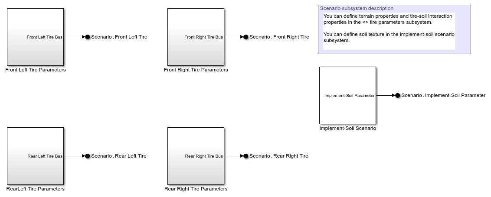The Front Left Tire Parameters, Front Right Tire Parameters, Rear Left Tire Parameters and Rear Right Tire Parameters subsystems consist of parameters such as tykc (soil sinkage cohesion moduli), tykphi (soil sinkage friction moduli), tyn (soil sinkage exponent), tc (cohesion of the terrain), tphi (angle of internal shearing resistance of the terrain), and tk (shear deformation parameter of the terrain). You can specify the soil texture in the Implement-Soil Scenario subsystem if the implement draft force prediction method is based on the empirical relation as per ASABE 497.5 Standard in the Implement block.
Driver Controls Subsystem
The Driver Controls subsystem provides the engine speed, transmission pump displacement commands to the Tractor subsystem.
Open Driver Controls Subsystem
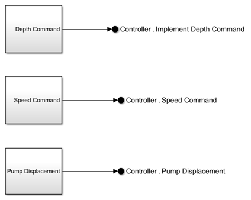You can specify the implement depth command if the implement draft force prediction method is based on the empirical relation as per ASABE 497.5 Standard in the Implement block.
Energy Calculations Subsystem
The Energy Calculations subsystem computes the energy consumed by the various components of the transmission.
Open Energy Calculations Subsystem
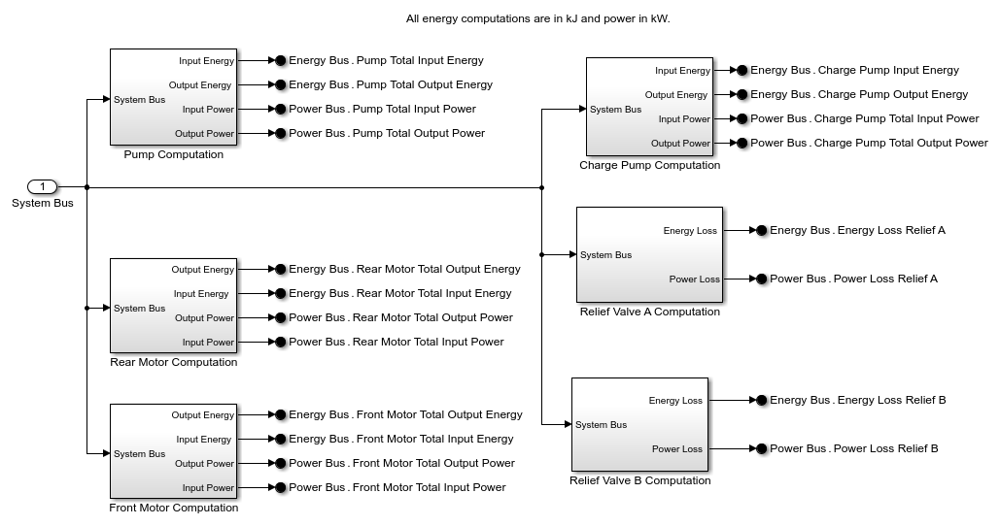Open Transmission Pump Input Energy Computation Subsystem
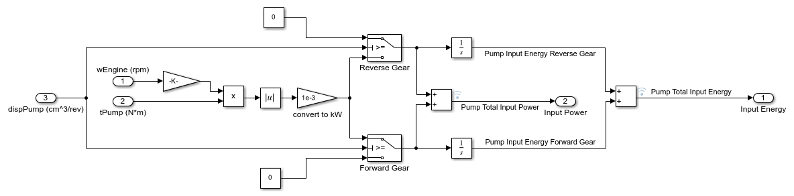You can compute the transmission pump input energy as a product of the engine speed and engine torque.
Open Transmission Pump Output Energy Computation Subsystem
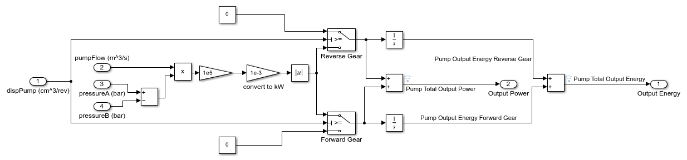You can compute the transmission pump output energy as a product of the pump volumetric flow rate and the pressure difference across the pump.
Transmission Energy Chart Dashboard
Open Transmission Energy Chart Dashboard Subsystem
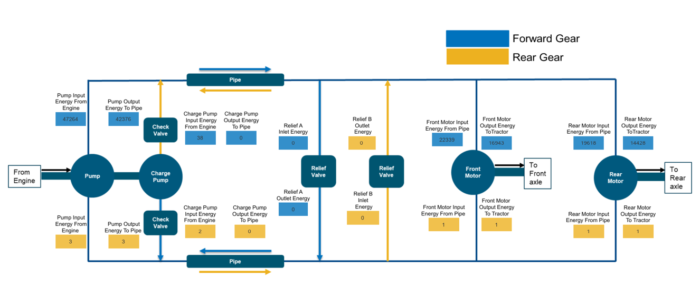You can visualize the energy flow in the transmission by looking inside the Transmission Energy Chart Dashboard subsystem. Values in blue rectangles represent energy states for various components in a forward gear and values in yellow rectangles represent energy states for the same components in the reverse gear.